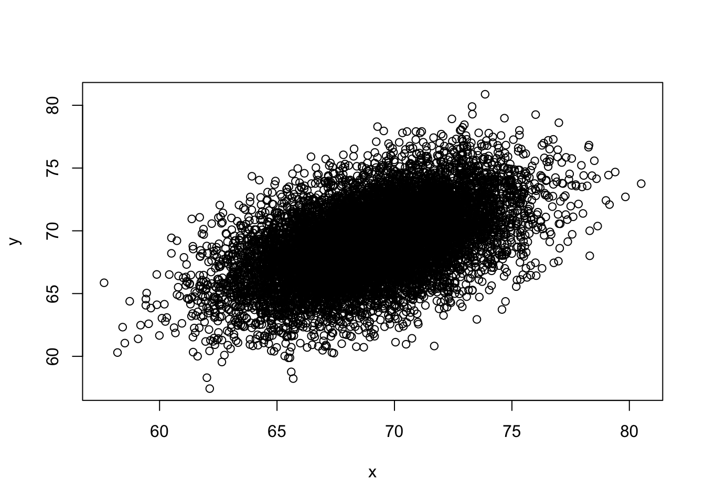

3 Section 2 - Machine Learning Basics Overview
In the Machine Learning Basics section, you will learn the basics of machine learning.
After completing this section, you will be able to:
- Start to use the caret package.
- Construct and interpret a confusion matrix.
- Use conditional probabilities in the context of machine learning.
This section has two parts: basics of evaluating machine learning algorithms and conditional probabilities.
3.1 Caret package, training and test sets, and overall accuracy
There is a link to the relevant sections of the textbook: Training and test sets and Overall accuracy
Key points
- Note: the
set.seed()function is used to obtain reproducible results. If you have R 3.6 or later, please use thesample.kind = "Rounding"argument whenever you set the seed for this course. - To mimic the ultimate evaluation process, we randomly split our data into two — a training set and a test set — and act as if we don’t know the outcome of the test set. We develop algorithms using only the training set; the test set is used only for evaluation.
- The
createDataPartition()function from the caret package can be used to generate indexes for randomly splitting data. - Note: contrary to what the documentation says, this course will use the argument p as the percentage of data that goes to testing. The indexes made from
createDataPartition()should be used to create the test set. Indexes should be created on the outcome and not a predictor. - The simplest evaluation metric for categorical outcomes is overall accuracy: the proportion of cases that were correctly predicted in the test set.
Code
if(!require(tidyverse)) install.packages("tidyverse")## Loading required package: tidyverse## ── Attaching packages ───────────────────────────────────────────────────────────────────────────────────────────────────────────────────────────────────────────── tidyverse 1.3.0 ──## ✓ ggplot2 3.3.3 ✓ purrr 0.3.4
## ✓ tibble 3.0.4 ✓ dplyr 1.0.2
## ✓ tidyr 1.1.2 ✓ stringr 1.4.0
## ✓ readr 1.4.0 ✓ forcats 0.5.0## ── Conflicts ──────────────────────────────────────────────────────────────────────────────────────────────────────────────────────────────────────────────── tidyverse_conflicts() ──
## x dplyr::filter() masks stats::filter()
## x dplyr::lag() masks stats::lag()if(!require(caret)) install.packages("caret")## Loading required package: caret## Loading required package: lattice##
## Attaching package: 'caret'## The following object is masked from 'package:purrr':
##
## liftif(!require(dslabs)) install.packages("dslabs")## Loading required package: dslabslibrary(tidyverse)
library(caret)
library(dslabs)
data(heights)
# define the outcome and predictors
y <- heights$sex
x <- heights$height
# generate training and test sets
set.seed(2, sample.kind = "Rounding") # if using R 3.5 or earlier, remove the sample.kind argument## Warning in set.seed(2, sample.kind = "Rounding"): non-uniform 'Rounding' sampler usedtest_index <- createDataPartition(y, times = 1, p = 0.5, list = FALSE)
test_set <- heights[test_index, ]
train_set <- heights[-test_index, ]
# guess the outcome
y_hat <- sample(c("Male", "Female"), length(test_index), replace = TRUE)
y_hat <- sample(c("Male", "Female"), length(test_index), replace = TRUE) %>%
factor(levels = levels(test_set$sex))
# compute accuracy
mean(y_hat == test_set$sex)## [1] 0.5238095heights %>% group_by(sex) %>% summarize(mean(height), sd(height))## `summarise()` ungrouping output (override with `.groups` argument)## # A tibble: 2 x 3
## sex `mean(height)` `sd(height)`
## <fct> <dbl> <dbl>
## 1 Female 64.9 3.76
## 2 Male 69.3 3.61y_hat <- ifelse(x > 62, "Male", "Female") %>% factor(levels = levels(test_set$sex))
mean(y == y_hat)## [1] 0.7933333# examine the accuracy of 10 cutoffs
cutoff <- seq(61, 70)
accuracy <- map_dbl(cutoff, function(x){
y_hat <- ifelse(train_set$height > x, "Male", "Female") %>%
factor(levels = levels(test_set$sex))
mean(y_hat == train_set$sex)
})
data.frame(cutoff, accuracy) %>%
ggplot(aes(cutoff, accuracy)) +
geom_point() +
geom_line() max(accuracy)## [1] 0.8361905best_cutoff <- cutoff[which.max(accuracy)]
best_cutoff## [1] 64y_hat <- ifelse(test_set$height > best_cutoff, "Male", "Female") %>%
factor(levels = levels(test_set$sex))
y_hat <- factor(y_hat)
mean(y_hat == test_set$sex)## [1] 0.81714293.2 Comprehension Check - Basics of Evaluating Machine Learning Algorithms
- For each of the following, indicate whether the outcome is continuous or categorical.
- Digit reader - categorical
- Height - continuous
- Spam filter - categorical
- Stock prices - continuous
- Sex - categorical
- How many features are available to us for prediction in the
mnistdigits dataset?
You can download the mnist dataset using the read_mnist() function from the dslabs package.
mnist <- read_mnist()
ncol(mnist$train$images)## [1] 7843.3 Confusion matrix
There is a link to the relevant section of the textbook: Confusion Matrix
Key points
- Overall accuracy can sometimes be a deceptive measure because of unbalanced classes.
- A general improvement to using overall accuracy is to study sensitivity and specificity separately. Sensitivity, also known as the true positive rate or recall, is the proportion of actual positive outcomes correctly identified as such. Specificity, also known as the true negative rate, is the proportion of actual negative outcomes that are correctly identified as such.
- A confusion matrix tabulates each combination of prediction and actual value. You can create a confusion matrix in R using the
table()function or theconfusionMatrix()function from the caret package.
Code
# tabulate each combination of prediction and actual value
table(predicted = y_hat, actual = test_set$sex)## actual
## predicted Female Male
## Female 50 27
## Male 69 379test_set %>%
mutate(y_hat = y_hat) %>%
group_by(sex) %>%
summarize(accuracy = mean(y_hat == sex))## `summarise()` ungrouping output (override with `.groups` argument)## # A tibble: 2 x 2
## sex accuracy
## <fct> <dbl>
## 1 Female 0.420
## 2 Male 0.933prev <- mean(y == "Male")
confusionMatrix(data = y_hat, reference = test_set$sex)## Confusion Matrix and Statistics
##
## Reference
## Prediction Female Male
## Female 50 27
## Male 69 379
##
## Accuracy : 0.8171
## 95% CI : (0.7814, 0.8493)
## No Information Rate : 0.7733
## P-Value [Acc > NIR] : 0.008354
##
## Kappa : 0.4041
##
## Mcnemar's Test P-Value : 2.857e-05
##
## Sensitivity : 0.42017
## Specificity : 0.93350
## Pos Pred Value : 0.64935
## Neg Pred Value : 0.84598
## Prevalence : 0.22667
## Detection Rate : 0.09524
## Detection Prevalence : 0.14667
## Balanced Accuracy : 0.67683
##
## 'Positive' Class : Female
## 3.4 Balanced accuracy and F1 score
There is a link to the relevant section of the textbook: Balanced accuracy and F1 Score
Key points
- For optimization purposes, sometimes it is more useful to have a one number summary than studying both specificity and sensitivity. One preferred metric is balanced accuracy. Because specificity and sensitivity are rates, it is more appropriate to compute the harmonic average. In fact, the F1-score, a widely used one-number summary, is the harmonic average of precision and recall.
- Depending on the context, some type of errors are more costly than others. The F1-score can be adapted to weigh specificity and sensitivity differently.
- You can compute the F1-score using the
F_meas()function in the caret package.
Code
# maximize F-score
cutoff <- seq(61, 70)
F_1 <- map_dbl(cutoff, function(x){
y_hat <- ifelse(train_set$height > x, "Male", "Female") %>%
factor(levels = levels(test_set$sex))
F_meas(data = y_hat, reference = factor(train_set$sex))
})
data.frame(cutoff, F_1) %>%
ggplot(aes(cutoff, F_1)) +
geom_point() +
geom_line()
max(F_1)## [1] 0.6142322best_cutoff <- cutoff[which.max(F_1)]
best_cutoff## [1] 66y_hat <- ifelse(test_set$height > best_cutoff, "Male", "Female") %>%
factor(levels = levels(test_set$sex))
sensitivity(data = y_hat, reference = test_set$sex)## [1] 0.6806723specificity(data = y_hat, reference = test_set$sex)## [1] 0.83497543.5 Prevalence matters in practice
There is a link to the relevant section of the textbook: Prevalence matters in practice
Key points
- A machine learning algorithm with very high sensitivity and specificity may not be useful in practice when prevalence is close to either 0 or 1. For example, if you develop an algorithm for disease diagnosis with very high sensitivity, but the prevalence of the disease is pretty low, then the precision of your algorithm is probably very low based on Bayes’ theorem.
3.6 ROC and precision-recall curves
There is a link to the relevant section of the textbook: ROC and precision-recall curves
Key points
- A very common approach to evaluating accuracy and F1-score is to compare them graphically by plotting both. A widely used plot that does this is the receiver operating characteristic (ROC) curve. The ROC curve plots sensitivity (TPR) versus 1 - specificity or the false positive rate (FPR).
- However, ROC curves have one weakness and it is that neither of the measures plotted depend on prevalence. In cases in which prevalence matters, we may instead make a precision-recall plot, which has a similar idea with ROC curve.
Code
Note: your results and plots may be slightly different.
p <- 0.9
n <- length(test_index)
y_hat <- sample(c("Male", "Female"), n, replace = TRUE, prob=c(p, 1-p)) %>%
factor(levels = levels(test_set$sex))
mean(y_hat == test_set$sex)## [1] 0.7180952# ROC curve
probs <- seq(0, 1, length.out = 10)
guessing <- map_df(probs, function(p){
y_hat <-
sample(c("Male", "Female"), n, replace = TRUE, prob=c(p, 1-p)) %>%
factor(levels = c("Female", "Male"))
list(method = "Guessing",
FPR = 1 - specificity(y_hat, test_set$sex),
TPR = sensitivity(y_hat, test_set$sex))
})
guessing %>% qplot(FPR, TPR, data =., xlab = "1 - Specificity", ylab = "Sensitivity")cutoffs <- c(50, seq(60, 75), 80)
height_cutoff <- map_df(cutoffs, function(x){
y_hat <- ifelse(test_set$height > x, "Male", "Female") %>%
factor(levels = c("Female", "Male"))
list(method = "Height cutoff",
FPR = 1-specificity(y_hat, test_set$sex),
TPR = sensitivity(y_hat, test_set$sex))
})
# plot both curves together
bind_rows(guessing, height_cutoff) %>%
ggplot(aes(FPR, TPR, color = method)) +
geom_line() +
geom_point() +
xlab("1 - Specificity") +
ylab("Sensitivity")if(!require(ggrepel)) install.packages("ggrepel")## Loading required package: ggrepellibrary(ggrepel)
map_df(cutoffs, function(x){
y_hat <- ifelse(test_set$height > x, "Male", "Female") %>%
factor(levels = c("Female", "Male"))
list(method = "Height cutoff",
cutoff = x,
FPR = 1-specificity(y_hat, test_set$sex),
TPR = sensitivity(y_hat, test_set$sex))
}) %>%
ggplot(aes(FPR, TPR, label = cutoff)) +
geom_line() +
geom_point() +
geom_text_repel(nudge_x = 0.01, nudge_y = -0.01)# plot precision against recall
guessing <- map_df(probs, function(p){
y_hat <- sample(c("Male", "Female"), length(test_index),
replace = TRUE, prob=c(p, 1-p)) %>%
factor(levels = c("Female", "Male"))
list(method = "Guess",
recall = sensitivity(y_hat, test_set$sex),
precision = precision(y_hat, test_set$sex))
})
height_cutoff <- map_df(cutoffs, function(x){
y_hat <- ifelse(test_set$height > x, "Male", "Female") %>%
factor(levels = c("Female", "Male"))
list(method = "Height cutoff",
recall = sensitivity(y_hat, test_set$sex),
precision = precision(y_hat, test_set$sex))
})
bind_rows(guessing, height_cutoff) %>%
ggplot(aes(recall, precision, color = method)) +
geom_line() +
geom_point()## Warning: Removed 1 row(s) containing missing values (geom_path).## Warning: Removed 1 rows containing missing values (geom_point).guessing <- map_df(probs, function(p){
y_hat <- sample(c("Male", "Female"), length(test_index), replace = TRUE,
prob=c(p, 1-p)) %>%
factor(levels = c("Male", "Female"))
list(method = "Guess",
recall = sensitivity(y_hat, relevel(test_set$sex, "Male", "Female")),
precision = precision(y_hat, relevel(test_set$sex, "Male", "Female")))
})
height_cutoff <- map_df(cutoffs, function(x){
y_hat <- ifelse(test_set$height > x, "Male", "Female") %>%
factor(levels = c("Male", "Female"))
list(method = "Height cutoff",
recall = sensitivity(y_hat, relevel(test_set$sex, "Male", "Female")),
precision = precision(y_hat, relevel(test_set$sex, "Male", "Female")))
})
bind_rows(guessing, height_cutoff) %>%
ggplot(aes(recall, precision, color = method)) +
geom_line() +
geom_point()## Warning: Removed 1 row(s) containing missing values (geom_path).
## Warning: Removed 1 rows containing missing values (geom_point).3.7 Comprehension Check - Practice with Machine Learning, Part 1
The following questions all ask you to work with the dataset described below.
The reported_heights and heights datasets were collected from three classes taught in the Departments of Computer Science and Biostatistics, as well as remotely through the Extension School. The Biostatistics class was taught in 2016 along with an online version offered by the Extension School. On 2016-01-25 at 8:15 AM, during one of the lectures, the instructors asked student to fill in the sex and height questionnaire that populated the reported_heights dataset. The online students filled out the survey during the next few days, after the lecture was posted online. We can use this insight to define a variable which we will call type, to denote the type of student, inclass or online.
The code below sets up the dataset for you to analyze in the following exercises:
if(!require(dplyr)) install.packages("dplyr")
if(!require(lubridate)) install.packages("lubridate")## Loading required package: lubridate##
## Attaching package: 'lubridate'## The following objects are masked from 'package:base':
##
## date, intersect, setdiff, unionlibrary(dplyr)
library(lubridate)
data(reported_heights)
dat <- mutate(reported_heights, date_time = ymd_hms(time_stamp)) %>%
filter(date_time >= make_date(2016, 01, 25) & date_time < make_date(2016, 02, 1)) %>%
mutate(type = ifelse(day(date_time) == 25 & hour(date_time) == 8 & between(minute(date_time), 15, 30), "inclass","online")) %>%
select(sex, type)
y <- factor(dat$sex, c("Female", "Male"))
x <- dat$type- The
typecolumn ofdatindicates whether students took classes in person (“inclass”) or online (“online”). What proportion of the inclass group is female? What proportion of the online group is female?
Enter your answer as a percentage or decimal (eg “50%” or “0.50”) to at least the hundredths place.
dat %>% group_by(type) %>% summarize(prop_female = mean(sex == "Female"))## `summarise()` ungrouping output (override with `.groups` argument)## # A tibble: 2 x 2
## type prop_female
## <chr> <dbl>
## 1 inclass 0.667
## 2 online 0.378- In the course videos, height cutoffs were used to predict sex. Instead of height, use the
typevariable to predict sex. Assume that for each class type the students are either all male or all female, based on the most prevalent sex in each class type you calculated in Q1. Report the accuracy of your prediction of sex based on type. You do not need to split the data into training and test sets.
Enter your accuracy as a percentage or decimal (eg “50%” or “0.50”) to at least the hundredths place.
y_hat <- ifelse(x == "online", "Male", "Female") %>%
factor(levels = levels(y))
mean(y_hat==y)## [1] 0.6333333- Write a line of code using the
table()function to show the confusion matrix betweeny_hatandy. Use the exact formatfunction(a, b)for your answer and do not name the columns and rows. Your answer should have exactly one space.
table(y_hat, y)## y
## y_hat Female Male
## Female 26 13
## Male 42 69- What is the sensitivity of this prediction? You can use the
sensitivity()function from the caret package. Enter your answer as a percentage or decimal (eg “50%” or “0.50”) to at least the hundredths place.
sensitivity(y_hat, y)## [1] 0.3823529- What is the specificity of this prediction? You can use the
specificity()function from the caret package. Enter your answer as a percentage or decimal (eg “50%” or “0.50”) to at least the hundredths place.
specificity(y_hat, y)## [1] 0.8414634- What is the prevalence (% of females) in the
datdataset defined above? Enter your answer as a percentage or decimal (eg “50%” or “0.50”) to at least the hundredths place.
mean(y == "Female")## [1] 0.45333333.8 Comprehension Check - Practice with Machine Learning, Part 2
We will practice building a machine learning algorithm using a new dataset, iris, that provides multiple predictors for us to use to train. To start, we will remove the setosa species and we will focus on the versicolor and virginica iris species using the following code:
data(iris)
iris <- iris[-which(iris$Species=='setosa'),]
y <- iris$SpeciesThe following questions all involve work with this dataset.
- First let us create an even split of the data into
trainandtestpartitions usingcreateDataPartition()from the caret package. The code with a missing line is given below:
# set.seed(2) # if using R 3.5 or earlier
set.seed(2, sample.kind="Rounding") # if using R 3.6 or later
# line of code
test <- iris[test_index,]
train <- iris[-test_index,]Which code should be used in place of # line of code above?
- A. test_index <- createDataPartition(y,times=1,p=0.5)
- B. test_index <- sample(2,length(y),replace=FALSE)
- C. test_index <- createDataPartition(y,times=1,p=0.5,list=FALSE)
- D. test_index <- rep(1,length(y))
# set.seed(2) # if using R 3.5 or earlier
set.seed(2, sample.kind="Rounding") # if using R 3.6 or later## Warning in set.seed(2, sample.kind = "Rounding"): non-uniform 'Rounding' sampler usedtest_index <- createDataPartition(y,times=1,p=0.5,list=FALSE)## Warning in createDataPartition(y, times = 1, p = 0.5, list = FALSE): Some classes have no records ( setosa ) and these will be ignoredtest <- iris[test_index,]
train <- iris[-test_index,]- Next we will figure out the singular feature in the dataset that yields the greatest overall accuracy when predicting species. You can use the code from the introduction and from Q7 to start your analysis.
Using only the train iris dataset, for each feature, perform a simple search to find the cutoff that produces the highest accuracy, predicting virginica if greater than the cutoff and versicolor otherwise. Use the seq function over the range of each feature by intervals of 0.1 for this search.
Which feature produces the highest accuracy?
foo <- function(x){
rangedValues <- seq(range(x)[1],range(x)[2],by=0.1)
sapply(rangedValues,function(i){
y_hat <- ifelse(x>i,'virginica','versicolor')
mean(y_hat==train$Species)
})
}
predictions <- apply(train[,-5],2,foo)
sapply(predictions,max) ## Sepal.Length Sepal.Width Petal.Length Petal.Width
## 0.70 0.62 0.96 0.94- A. Sepal.Length
- B. Sepal.Width
- C. Petal.Length
- D. Petal.Width
- For the feature selected in Q8, use the smart cutoff value from the training data to calculate overall accuracy in the test data. What is the overall accuracy?
predictions <- foo(train[,3])
rangedValues <- seq(range(train[,3])[1],range(train[,3])[2],by=0.1)
cutoffs <-rangedValues[which(predictions==max(predictions))]
y_hat <- ifelse(test[,3]>cutoffs[1],'virginica','versicolor')
mean(y_hat==test$Species)## [1] 0.9- Notice that we had an overall accuracy greater than 96% in the training data, but the overall accuracy was lower in the test data. This can happen often if we overtrain. In fact, it could be the case that a single feature is not the best choice. For example, a combination of features might be optimal. Using a single feature and optimizing the cutoff as we did on our training data can lead to overfitting.
Given that we know the test data, we can treat it like we did our training data to see if the same feature with a different cutoff will optimize our predictions.
Which feature best optimizes our overall accuracy?
foo <- function(x){
rangedValues <- seq(range(x)[1],range(x)[2],by=0.1)
sapply(rangedValues,function(i){
y_hat <- ifelse(x>i,'virginica','versicolor')
mean(y_hat==test$Species)
})
}
predictions <- apply(test[,-5],2,foo)
sapply(predictions,max)## Sepal.Length Sepal.Width Petal.Length Petal.Width
## 0.78 0.64 0.90 0.94- A. Sepal.Length
- B. Sepal.Width
- C. Petal.Length
- D. Petal.Width
- Now we will perform some exploratory data analysis on the data.
Notice that Petal.Length and Petal.Width in combination could potentially be more information than either feature alone.
Optimize the the cutoffs for Petal.Length and Petal.Width separately in the train dataset by using the seq function with increments of 0.1. Then, report the overall accuracy when applied to the test dataset by creating a rule that predicts virginica if Petal.Length is greater than the length cutoff OR Petal.Width is greater than the width cutoff, and versicolor otherwise.
What is the overall accuracy for the test data now?
data(iris)
iris <- iris[-which(iris$Species=='setosa'),]
y <- iris$Species
plot(iris,pch=21,bg=iris$Species)# set.seed(2) # if using R 3.5 or earlier
set.seed(2, sample.kind="Rounding") # if using R 3.6 or later## Warning in set.seed(2, sample.kind = "Rounding"): non-uniform 'Rounding' sampler usedtest_index <- createDataPartition(y,times=1,p=0.5,list=FALSE)## Warning in createDataPartition(y, times = 1, p = 0.5, list = FALSE): Some classes have no records ( setosa ) and these will be ignoredtest <- iris[test_index,]
train <- iris[-test_index,]
petalLengthRange <- seq(range(train$Petal.Length)[1],range(train$Petal.Length)[2],by=0.1)
petalWidthRange <- seq(range(train$Petal.Width)[1],range(train$Petal.Width)[2],by=0.1)
length_predictions <- sapply(petalLengthRange,function(i){
y_hat <- ifelse(train$Petal.Length>i,'virginica','versicolor')
mean(y_hat==train$Species)
})
length_cutoff <- petalLengthRange[which.max(length_predictions)] # 4.7
width_predictions <- sapply(petalWidthRange,function(i){
y_hat <- ifelse(train$Petal.Width>i,'virginica','versicolor')
mean(y_hat==train$Species)
})
width_cutoff <- petalWidthRange[which.max(width_predictions)] # 1.5
y_hat <- ifelse(test$Petal.Length>length_cutoff | test$Petal.Width>width_cutoff,'virginica','versicolor')
mean(y_hat==test$Species)## [1] 0.883.9 Conditional probabilities
There is a link to the relevant section of the textbook: Conditional probabilities
Key points
- Conditional probabilities for each class:
\(p_{k}(x) = Pr(Y = k|X = x), for\, k = 1, ..., K\)
- In machine learning, this is referred to as Bayes’ Rule. This is a theoretical rule because in practice we don’t know \(p(x)\). Having a good estimate of the \(p(x)\) will suffice for us to build optimal prediction models, since we can control the balance between specificity and sensitivity however we wish. In fact, estimating these conditional probabilities can be thought of as the main challenge of machine learning.
3.10 Conditional expectations and loss function
There is a link to the relevant sections of the textbook: Conditional expectations and Loss functions
Key points
- Due to the connection between conditional probabilities and conditional expectations:
\(p_{k}(x) = Pr(Y = k|X = x),\,\text{for}\,k = 1, ..., K\)
we often only use the expectation to denote both the conditional probability and conditional expectation.
- For continuous outcomes, we define a loss function to evaluate the model. The most commonly used one is MSE (Mean Squared Error). The reason why we care about the conditional expectation in machine learning is that the expected value minimizes the MSE:
\(\hat{Y} = E(Y|X = x)\, \text{minimizes}\, E\{(\hat{Y} - Y)^2|X=x\}\)
Due to this property, a succinct description of the main task of machine learning is that we use data to estimate for any set of features. The main way in which competing machine learning algorithms differ is in their approach to estimating this expectation.
3.11 Comprehension Check - Conditional Probabilities, Part 1
- In a previous module, we covered Bayes’ theorem and the Bayesian paradigm. Conditional probabilities are a fundamental part of this previous covered rule.
\(P(A|B) = P(B|A)\frac{P(A)}{P(B)}\)
We first review a simple example to go over conditional probabilities.
Assume a patient comes into the doctor’s office to test whether they have a particular disease.
- The test is positive 85% of the time when tested on a patient with the disease (high sensitivity): \(P(\text{test} + | \text{disease}) = 0.85\)
- The test is negative 90% of the time when tested on a healthy patient (high specificity): \(P(\text{test} - | \text{heathy}) = 0.90\)
- The disease is prevalent in about 2% of the community: \(P(\text{disease}) = 0.02\)
Using Bayes’ theorem, calculate the probability that you have the disease if the test is positive.
\(P(\text{disease} | \text{test}+) = P(\text{test}+ | \text{disease}) \times \frac{P(\text{disease})}{P(\text{test}+)} = \frac{P(\text{test}+ | \text{disease})P(\text{disease})}{P(\text{test}+ | \text{disease})P(\text{disease})+P(\text{test}+ | \text{healthy})P(\text{healthy})]} = \frac{0.85 \times 0.02}{0.85 \times 0.02 + 0.1 \times 0.98} = 0.1478261\)
The following 4 questions (Q2-Q5) all relate to implementing this calculation using R.
We have a hypothetical population of 1 million individuals with the following conditional probabilities as described below:
- The test is positive 85% of the time when tested on a patient with the disease (high sensitivity): \(P(\text{test} + | \text{disease}) = 0.85\)
- The test is negative 90% of the time when tested on a healthy patient (high specificity): \(P(\text{test} - | \text{heathy}) = 0.90\)
- The disease is prevalent in about 2% of the community: \(P(\text{disease}) = 0.02\)
Here is some sample code to get you started:
# set.seed(1) # if using R 3.5 or earlier
set.seed(1, sample.kind = "Rounding") # if using R 3.6 or later## Warning in set.seed(1, sample.kind = "Rounding"): non-uniform 'Rounding' sampler useddisease <- sample(c(0,1), size=1e6, replace=TRUE, prob=c(0.98,0.02))
test <- rep(NA, 1e6)
test[disease==0] <- sample(c(0,1), size=sum(disease==0), replace=TRUE, prob=c(0.90,0.10))
test[disease==1] <- sample(c(0,1), size=sum(disease==1), replace=TRUE, prob=c(0.15, 0.85))- What is the probability that a test is positive?
mean(test)## [1] 0.114509- What is the probability that an individual has the disease if the test is negative?
mean(disease[test==0])## [1] 0.003461356- What is the probability that you have the disease if the test is positive? Remember: calculate the conditional probability the disease is positive assuming a positive test.
mean(disease[test==1]==1)## [1] 0.1471762- Compare the prevalence of disease in people who test positive to the overall prevalence of disease.
If a patient’s test is positive, by how many times does that increase their risk of having the disease? First calculate the probability of having the disease given a positive test, then divide by the probability of having the disease.
mean(disease[test==1]==1)/mean(disease==1)## [1] 7.3891063.12 Comprehension Check - Conditional Probabilities, Part 2
- We are now going to write code to compute conditional probabilities for being male in the heights dataset. Round the heights to the closest inch. Plot the estimated conditional probability \(P(x) = \mbox{Pr}(\mbox{Male} | \mbox{height}=x)\).
Part of the code is provided here:
data("heights")
# MISSING CODE
qplot(height, p, data =.)Which of the following blocks of code can be used to replace # MISSING CODE to make the correct plot?
- A.
heights %>%
group_by(height) %>%
summarize(p = mean(sex == "Male")) %>%- B.
heights %>%
mutate(height = round(height)) %>%
group_by(height) %>%
summarize(p = mean(sex == "Female")) %>%- C.
heights %>%
mutate(height = round(height)) %>%
summarize(p = mean(sex == "Male")) %>%- D.
heights %>%
mutate(height = round(height)) %>%
group_by(height) %>%
summarize(p = mean(sex == "Male")) %>%data("heights")
heights %>%
mutate(height = round(height)) %>%
group_by(height) %>%
summarize(p = mean(sex == "Male")) %>%
qplot(height, p, data =.)## `summarise()` ungrouping output (override with `.groups` argument)- In the plot we just made in Q6 we see high variability for low values of height. This is because we have few data points. This time use the quantile \(0.1,0.2,\dots,0.9\) and the
cut()function to assure each group has the same number of points. Note that for any numeric vectorx, you can create groups based on quantiles like this:cut(x, quantile(x, seq(0, 1, 0.1)), include.lowest = TRUE).
Part of the code is provided here:
ps <- seq(0, 1, 0.1)
heights %>%
# MISSING CODE
group_by(g) %>%
summarize(p = mean(sex == "Male"), height = mean(height)) %>%
qplot(height, p, data =.)Which of the following lines of code can be used to replace # MISSING CODE to make the correct plot?
- A.
mutate(g = cut(male, quantile(height, ps), include.lowest = TRUE)) %>%- B.
mutate(g = cut(height, quantile(height, ps), include.lowest = TRUE)) %>%- C.
mutate(g = cut(female, quantile(height, ps), include.lowest = TRUE)) %>%- D.
mutate(g = cut(height, quantile(height, ps))) %>%ps <- seq(0, 1, 0.1)
heights %>%
mutate(g = cut(height, quantile(height, ps), include.lowest = TRUE)) %>%
group_by(g) %>%
summarize(p = mean(sex == "Male"), height = mean(height)) %>%
qplot(height, p, data =.)## `summarise()` ungrouping output (override with `.groups` argument)
- You can generate data from a bivariate normal distrubution using the MASS package using the following code:
if(!require(MASS)) install.packages("MASS")## Loading required package: MASS##
## Attaching package: 'MASS'## The following object is masked from 'package:dplyr':
##
## selectSigma <- 9*matrix(c(1,0.5,0.5,1), 2, 2)
dat <- MASS::mvrnorm(n = 10000, c(69, 69), Sigma) %>%
data.frame() %>% setNames(c("x", "y"))And you can make a quick plot using plot(dat).
plot(dat)
Using an approach similar to that used in the previous exercise, let’s estimate the conditional expectations and make a plot. Part of the code has again been provided for you:
ps <- seq(0, 1, 0.1)
dat %>%
# MISSING CODE
qplot(x, y, data =.)Which of the following blocks of code can be used to replace # MISSING CODE to make the correct plot?
- A.
mutate(g = cut(x, quantile(x, ps), include.lowest = TRUE)) %>%
group_by(g) %>%
summarize(y = mean(y), x = mean(x)) %>%- B.
mutate(g = cut(x, quantile(x, ps))) %>%
group_by(g) %>%
summarize(y = mean(y), x = mean(x)) %>%- C.
mutate(g = cut(x, quantile(x, ps), include.lowest = TRUE)) %>%
summarize(y = mean(y), x = mean(x)) %>%- D.
mutate(g = cut(x, quantile(x, ps), include.lowest = TRUE)) %>%
group_by(g) %>%
summarize(y =(y), x =(x)) %>%ps <- seq(0, 1, 0.1)
dat %>%
mutate(g = cut(x, quantile(x, ps), include.lowest = TRUE)) %>%
group_by(g) %>%
summarize(y = mean(y), x = mean(x)) %>%
qplot(x, y, data =.)## `summarise()` ungrouping output (override with `.groups` argument)